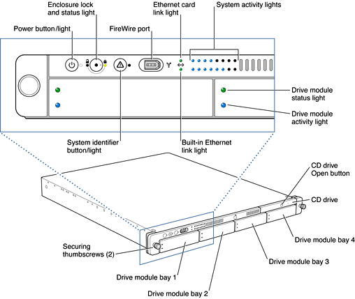
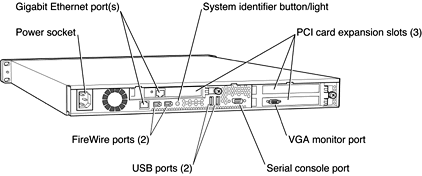

The Xserve computer has a rack optimized enclosure that is 1U (1.75") tall and 29 inches or less deep. The enclosure conforms to the industry standard for 19-inch rack mounting. For information about the standard, see the reference at "EIA Rack Standards".
All the components in the computer are accessible without the use of tools.
As shown in Figure 1-1, the front panel has a power button and light, an enclosure lock and light, a system identifier button and light, one FireWire port, an Ethernet link LED, and a two-by-eight LED matrix under software control.
Figure 1-1 Xserve front panel
As shown in Figure 1-2, the back panel also has an A/C power socket, a gigabit Ethernet port, two FireWire ports, a system identifier button and light, two USB ports, the serial console port, and the openings for ports on the PCI cards. PCI cards are secured to the enclosure by thumbscrews.
Figure 1-2 Xserve back panel
